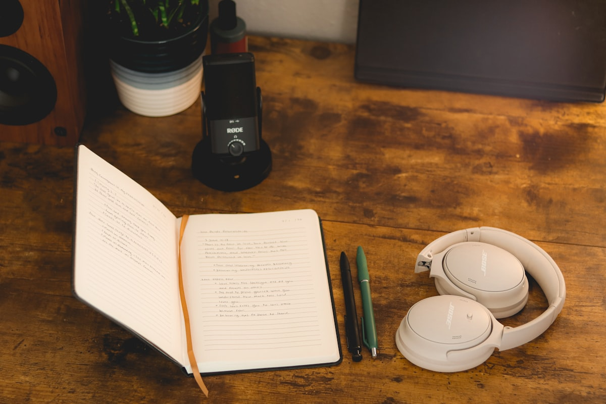

DINCOLO DE GRANIȚE
SE ÎNCARCĂ
Un fotograf român stabilit în Kent, care a decis că poveștile pe care le aude merită mai mult decât să rămână povestite la o cafea.
Nu am pornit acest podcast pentru a deveni podcaster. Sunt fotograf profesionist, stabilit în Kent, Marea Britanie — unul dintre milioanele de români care au plecat de acasă ca să construiască ceva în altă parte.
Ani de zile, meseria mea a fost să surprind momente: oameni, evenimente, fracțiuni de secundă care spun o poveste întreagă. Cu timpul am înțeles că cele mai valoroase lucruri pe care le-am întâlnit nu erau imaginile — ci poveștile din spatele lor. Oameni plecați cu o valiză și un plan vag, care azi conduc afaceri, echipe și proiecte pe care puțini le-ar fi crezut posibile.
Poveștile astea rămâneau spuse pe jumătate, între două cadre. Așa a apărut podcastul.

Fotograful e mereu de partea greșită a obiectivului. Portretul oficial apare aici odată cu primul episod.
Portrete, evenimente, oameni — și povești care rămâneau spuse pe jumătate, între două cadre.
Conversațiile din spatele ședințelor foto meritau microfoane, nu doar cadre.
Camere de cinema, lumini calde și un spațiu gândit pentru conversații lungi, fără grabă.
Dincolo de Granițe este locul unde românii din întreaga lume își spun povestea. Fie că locuiesc în România, Marea Britanie, Europa, America, Canada, Australia sau oriunde în lume, fiecare invitat aduce o perspectivă unică despre curaj, schimbare și succes.
În studioul nostru din Kent sau online, purtăm conversații autentice despre viață, antreprenoriat, carieră, investiții, educație, familie, credință, cultură, provocări și lecțiile care ne formează. Nu căutăm doar realizările, ci și drumul până la ele. Pentru că, dincolo de fiecare succes, există o poveste care merită ascultată.
Nu ne interesează varianta lustruită de LinkedIn. Ne interesează drumul întreg: primii ani grei, banii, riscurile, eșecurile prin care nu se laudă nimeni — și felul în care, pas cu pas, se construiește ceva al tău.
De unde a pornit totul. Copilăria, primele experiențe, alegerile și provocările care au pus bazele parcursului.
Deciziile care au schimbat direcția, riscurile asumate, eșecurile, reușitele și momentele care au definit drumul.
Experiențele, principiile și perspectivele pe care invitatul le-ar împărtăși celor care își construiesc propriul drum.
Episoadele se filmează în studio propriu, pe camere de cinema Canon, cu invitați față în față — iar pentru românii din alte colțuri ale lumii, pe Zoom. În română și engleză, cu subtitrare.
Români de oriunde din lume care au construit ceva: antreprenori, profesioniști, investitori, creatori. Nu contează dimensiunea poveștii, ci autenticitatea ei. Îți poți propune povestea din pagina Invitați.
Nu. Episoadele se filmează în studio, față în față, dar pentru românii din alte colțuri ale lumii înregistrăm pe Zoom — de oriunde ai fi.
Între 60 și 90 de minute — o conversație relaxată, fără scenariu rigid și fără grabă.
Nu. Participarea ca invitat este gratuită.
În română și engleză, iar toate episoadele au subtitrare.
În septembrie 2026, pe YouTube. Până atunci poți urmări pagina de episoade sau te poți abona la newsletter de pe prima pagină.
Nu căutăm povești perfecte. Căutăm oameni autentici și conversații care merită purtate.